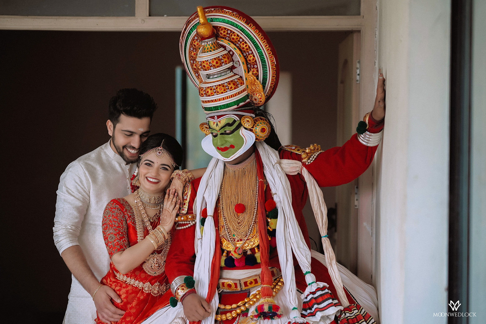
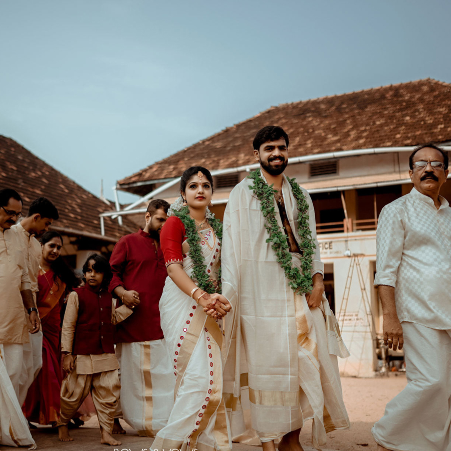
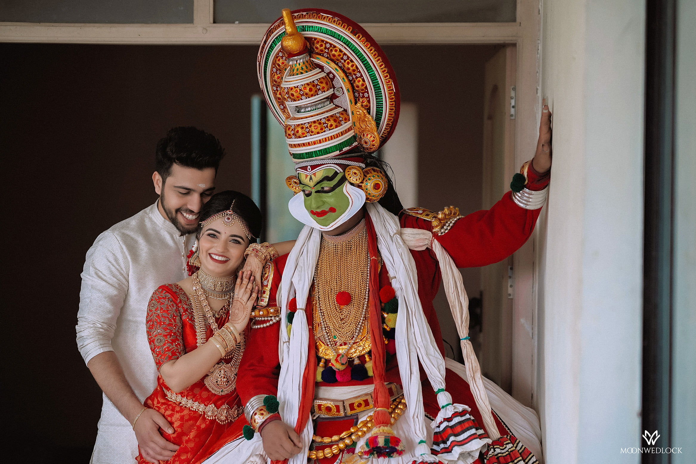
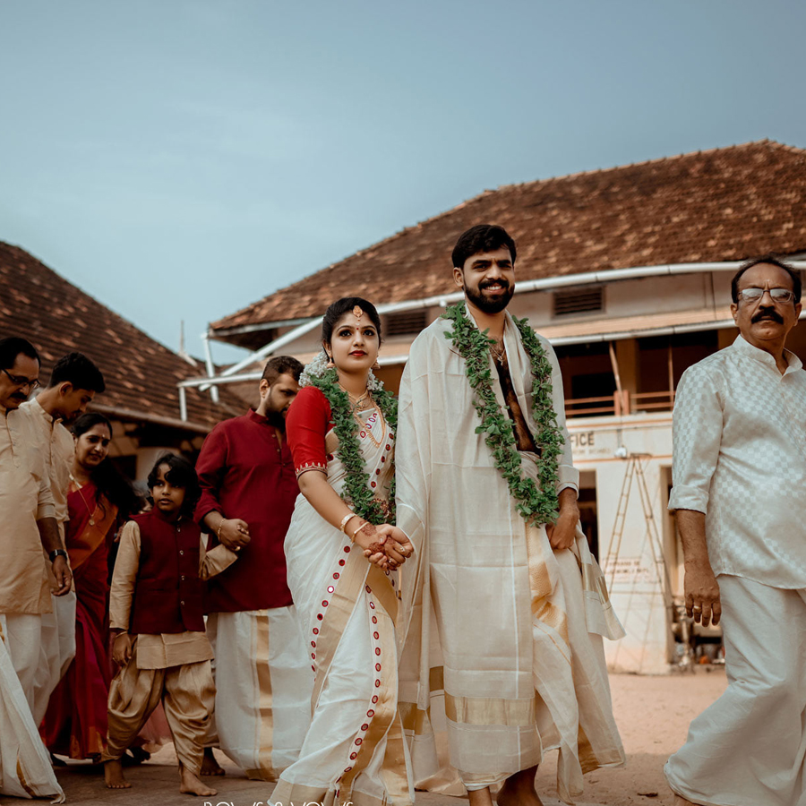
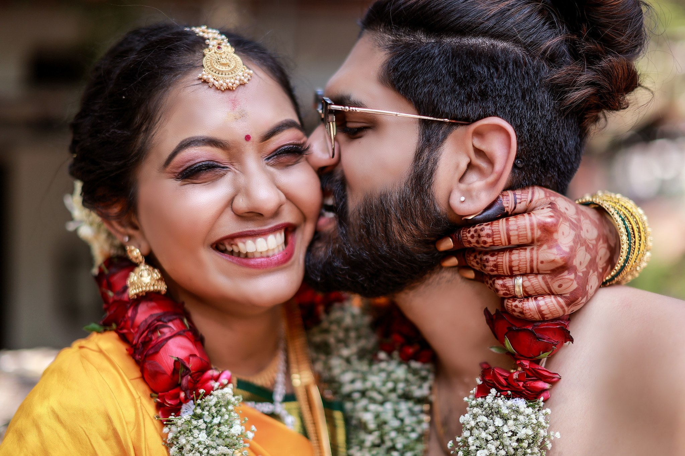
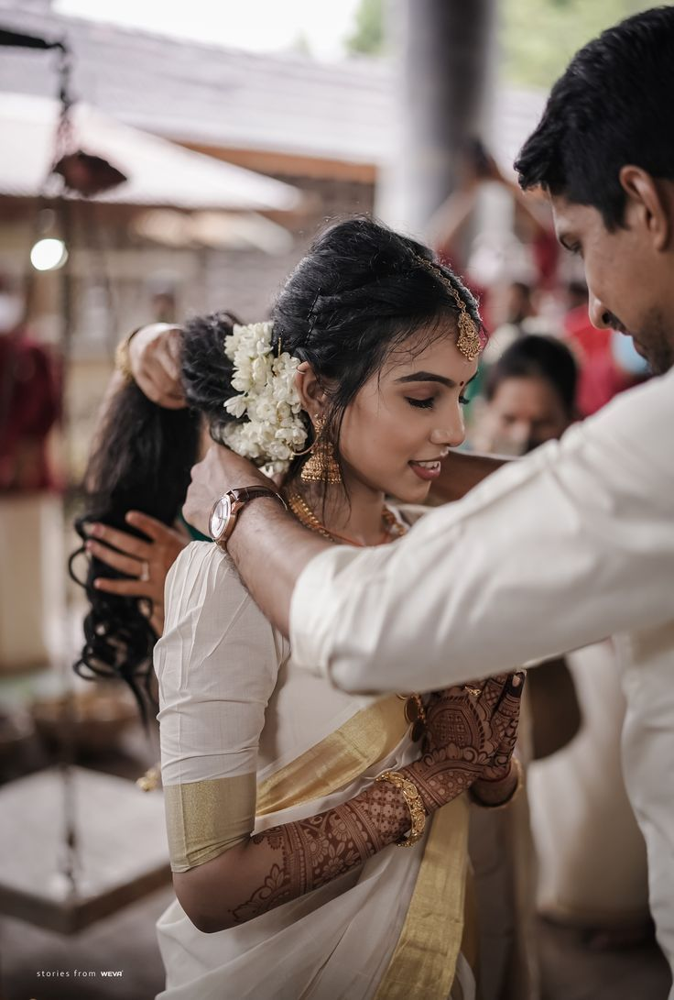
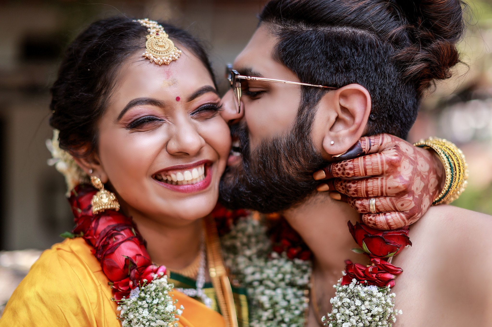
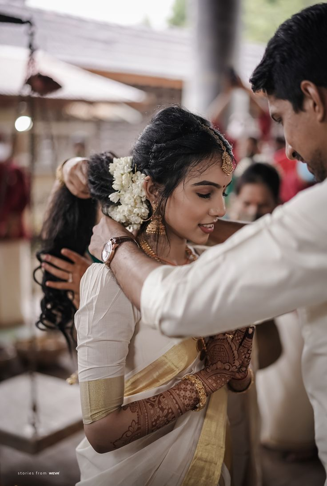

"The Classic Malyali Wedding"
Malayali weddings are a little different from weddings in other parts of India, be it in terms of the bridal look, understated decor or time of nuptials. In this third edition of our Wedding Tradition Series, we explore the nuances and rituals of traditional Hindu Malayali weddings. Much like other Indian cultures, the Malayali wedding includes a giving away ceremony involving the bride. Called ‘Kanyadaanam,’ it is performed around a holy fire called ‘Veli.’

 



 


